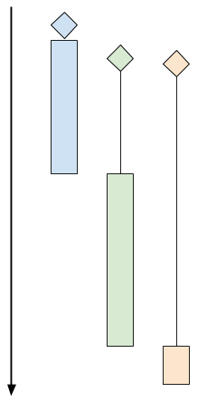
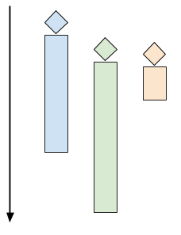

This is part 2 of a series on writing concurrent network servers. Part 1 presented the protocol implemented by the server, as well as the code for a simple sequential server, as a baseline for the series.
In this part, we're going to look at multi-threading as one approach to concurrency, with a bare-bones threaded server implementation in C, as well as a thread pool based implementation in Python.
All posts in the series:
- Part 1 - Introduction
- Part 2 - Threads
- Part 3 - Event-driven
- Part 4 - libuv
- Part 5 - Redis case study
- Part 6 - Callbacks, Promises and async/await
The multi-threaded approach to concurrent server design
When discussing the performance of the sequential server in part 1, it was immediately obvious that a lot of compute resources are wasted while the server processes a client connection. Even assuming a client that sends messages immediately and doesn't do any waiting, network communication is still involved; networks tend to be millions (or more) times slower than a modern CPU, so the CPU running the sequential server will spend the vast majority of time in gloriuos boredom waiting for new socket traffic to arrive.
Here's a chart showing how sequential client processing happens over time:
The diagrams shows 3 clients. The diamond shapes denote the client's "arrival time" (the time at which the client attempted to connect to the server). The black lines denote "wait time" (the time clients spent waiting for the server to actually accept their connection), and the colored bars denote actual "processing time" (the time server and client are interacting using the protocol). At the end of the colored bar, the client disconnects.
In the diagram above, even though the green and orange clients arrived shortly after the blue one, they have to wait for a while until the server is done with the blue client. At this point the green client is accepted, while the orange one has to wait even longer.
A multi-threaded server would launch multiple control threads, letting the OS manage concurrency on the CPU (and across multiple CPU cores). When a client connects, a thread is created to serve it, while the server is ready to accept more clients in the main thread. The time chart for this mode looks like the following:
One thread per client, in C using pthreads
Our first code sample in this post is a simple "one thread per client" server, written in C using the foundational pthreads API for multi-threading. Here's the main loop:
while (1) {
struct sockaddr_in peer_addr;
socklen_t peer_addr_len = sizeof(peer_addr);
int newsockfd =
accept(sockfd, (struct sockaddr*)&peer_addr, &peer_addr_len);
if (newsockfd < 0) {
perror_die("ERROR on accept");
}
report_peer_connected(&peer_addr, peer_addr_len);
pthread_t the_thread;
thread_config_t* config = (thread_config_t*)malloc(sizeof(*config));
if (!config) {
die("OOM");
}
config->sockfd = newsockfd;
pthread_create(&the_thread, NULL, server_thread, config);
// Detach the thread - when it's done, its resources will be cleaned up.
// Since the main thread lives forever, it will outlive the serving threads.
pthread_detach(the_thread);
}
And this is the server_thread function:
void* server_thread(void* arg) {
thread_config_t* config = (thread_config_t*)arg;
int sockfd = config->sockfd;
free(config);
// This cast will work for Linux, but in general casting pthread_id to an
// integral type isn't portable.
unsigned long id = (unsigned long)pthread_self();
printf("Thread %lu created to handle connection with socket %d\n", id,
sockfd);
serve_connection(sockfd);
printf("Thread %lu done\n", id);
return 0;
}
The thread "configuration" is passed as a thread_config_t structure:
typedef struct { int sockfd; } thread_config_t;
The pthread_create call in the main loop launches a new thread that runs the server_thread function. This thread terminates when server_thread returns. In turn, server_thread returns when serve_connection returns. serve_connection is exactly the same function from part 1.
In part 1 we used a script to launch multiple clients concurrently and observe how the server handles them. Let's do the same with the multithreaded server:
$ python3.6 simple-client.py -n 3 localhost 9090
INFO:2017-09-20 06:31:56,632:conn1 connected...
INFO:2017-09-20 06:31:56,632:conn2 connected...
INFO:2017-09-20 06:31:56,632:conn0 connected...
INFO:2017-09-20 06:31:56,632:conn1 sending b'^abc$de^abte$f'
INFO:2017-09-20 06:31:56,632:conn2 sending b'^abc$de^abte$f'
INFO:2017-09-20 06:31:56,632:conn0 sending b'^abc$de^abte$f'
INFO:2017-09-20 06:31:56,633:conn1 received b'b'
INFO:2017-09-20 06:31:56,633:conn2 received b'b'
INFO:2017-09-20 06:31:56,633:conn0 received b'b'
INFO:2017-09-20 06:31:56,670:conn1 received b'cdbcuf'
INFO:2017-09-20 06:31:56,671:conn0 received b'cdbcuf'
INFO:2017-09-20 06:31:56,671:conn2 received b'cdbcuf'
INFO:2017-09-20 06:31:57,634:conn1 sending b'xyz^123'
INFO:2017-09-20 06:31:57,634:conn2 sending b'xyz^123'
INFO:2017-09-20 06:31:57,634:conn1 received b'234'
INFO:2017-09-20 06:31:57,634:conn0 sending b'xyz^123'
INFO:2017-09-20 06:31:57,634:conn2 received b'234'
INFO:2017-09-20 06:31:57,634:conn0 received b'234'
INFO:2017-09-20 06:31:58,635:conn1 sending b'25$^ab0000$abab'
INFO:2017-09-20 06:31:58,635:conn2 sending b'25$^ab0000$abab'
INFO:2017-09-20 06:31:58,636:conn1 received b'36bc1111'
INFO:2017-09-20 06:31:58,636:conn2 received b'36bc1111'
INFO:2017-09-20 06:31:58,637:conn0 sending b'25$^ab0000$abab'
INFO:2017-09-20 06:31:58,637:conn0 received b'36bc1111'
INFO:2017-09-20 06:31:58,836:conn2 disconnecting
INFO:2017-09-20 06:31:58,836:conn1 disconnecting
INFO:2017-09-20 06:31:58,837:conn0 disconnecting
Indeed, all clients connected at the same time, and their communication with the server occurs concurrently.
Challenges with one thread per client
Even though threads are fairly efficient in terms of resource usage on modern OSes, the approach outlined in the previous section can still present challenges with some workloads.
Imagine a scenario where many clients are connecting simultaneously, and some of the sessions are long-lived. This means that many threads may be active at the same time in the server. Too many threads can consume a large amount of memory and CPU time just for the context switching [1]. An alternative way to look at it is as a security problem: this design makes it the server an easy target for a DoS attack - connect a few 100,000s of clients at the same time and let them all sit idle - this will likely kill the server due to excessive resource usage.
A larger problem occurs when there's a non-trivial amount of CPU-bound computation the server has to do for each client. In this case, swamping the server is considerably easier - just a few dozen clients can bring a server to its knees.
For these reasons, it's prudent the do some rate-limiting on the number of concurrent clients handled by a multi-threaded server. There's a number of ways to do this. The simplest that comes to mind is simply count the number of clients currently connected and restrict that number to some quantity (that was determined by careful benchmarking, hopefully). A variation on this approach that's very popular in concurrent application design is using a thread pool.
Thread pools
The idea of a thread pool is simple, yet powerful. The server creates a number of working threads that all expect to get tasks from some queue. This is the "pool". Then, each client connection is dispatched as a task to the pool. As long as there's an idle thread in the pool, it's handed the task. If all the threads in the pool are currently busy, the server blocks until the pool accepts the task (which happens after one of the busy threads finished processing its current task and went back to an idle state).
Here's a diagram showing a pool of 4 threads, each processing a task. Tasks (client connections in our case) are waiting until one of the threads in the pool is ready to accept new tasks.
It should be fairly obvious that the thread pool approach provides a rate-limiting mechanism in its very definition. We can decide ahead of time how many threads we want our server to have. Then, this is the maximal number of clients processed concurrently - the rest are waiting until one of the threads becomes free. If we have 8 threads in the pool, 8 is the maximal number of concurrent clients the server handles - even if thousands are attempting to connect simultaneously.
How do we decide how many threads should be in the pool? By a careful analysis of the problem domain, benchmarking, experimentation and also by the HW we have. If we have a single-core cloud instance that's one answer, if we have a 100-core dual socket server available, the answer is different. Picking the thread pool size can also be done dynamically at runtime based on load - I'll touch upon this topic in future posts in this series.
Servers that use thread pools manifest graceful degradation in the face of high load - clients are accepted at some steady rate, potentially slower than their rate of arrival for some periods of time; that said, no matter how many clients are trying to connect simultaneously, the server will remain responsive and will just churn through the backlog of clients to its best ability. Contrast this with the one-thread-per-client server which can merrily accept a large number of clients until it gets overloaded, at which point it's likely to either crash or start working very slowly for all processed clients due to resource exhaustion (such as virtual memory thrashing).
Using a thread pool for our network server
For this variation of the server I've switched to Python, which comes with a robust implementation of a thread pool in the standard library (ThreadPoolExecutor from the concurrent.futures module) [2].
This server creates a thread pool, then loops to accept new clients on the main listening socket. Each connected client is dispatched into the pool with submit:
pool = ThreadPoolExecutor(args.n)
sockobj = socket.socket(socket.AF_INET, socket.SOCK_STREAM)
sockobj.setsockopt(socket.SOL_SOCKET, socket.SO_REUSEADDR, 1)
sockobj.bind(('localhost', args.port))
sockobj.listen(15)
try:
while True:
client_socket, client_address = sockobj.accept()
pool.submit(serve_connection, client_socket, client_address)
except KeyboardInterrupt as e:
print(e)
sockobj.close()
The serve_connection function is very similar to its C counterpart, serving a single client until the client disconnects, while following our protocol:
ProcessingState = Enum('ProcessingState', 'WAIT_FOR_MSG IN_MSG')
def serve_connection(sockobj, client_address):
print('{0} connected'.format(client_address))
sockobj.sendall(b'*')
state = ProcessingState.WAIT_FOR_MSG
while True:
try:
buf = sockobj.recv(1024)
if not buf:
break
except IOError as e:
break
for b in buf:
if state == ProcessingState.WAIT_FOR_MSG:
if b == ord(b'^'):
state = ProcessingState.IN_MSG
elif state == ProcessingState.IN_MSG:
if b == ord(b'$'):
state = ProcessingState.WAIT_FOR_MSG
else:
sockobj.send(bytes([b + 1]))
else:
assert False
print('{0} done'.format(client_address))
sys.stdout.flush()
sockobj.close()
Let's see how the thread pool size affects the blocking behavior for multiple concurrent clients. For demonstration purposes, I'll run the threadpool server with a pool size of 2 (only two threads are created to service clients):
$ python3.6 threadpool-server.py -n 2
And in a separate terminal, let's run the client simulator again, with 3 concurrent clients:
$ python3.6 simple-client.py -n 3 localhost 9090
INFO:2017-09-22 05:58:52,815:conn1 connected...
INFO:2017-09-22 05:58:52,827:conn0 connected...
INFO:2017-09-22 05:58:52,828:conn1 sending b'^abc$de^abte$f'
INFO:2017-09-22 05:58:52,828:conn0 sending b'^abc$de^abte$f'
INFO:2017-09-22 05:58:52,828:conn1 received b'b'
INFO:2017-09-22 05:58:52,828:conn0 received b'b'
INFO:2017-09-22 05:58:52,867:conn1 received b'cdbcuf'
INFO:2017-09-22 05:58:52,867:conn0 received b'cdbcuf'
INFO:2017-09-22 05:58:53,829:conn1 sending b'xyz^123'
INFO:2017-09-22 05:58:53,829:conn0 sending b'xyz^123'
INFO:2017-09-22 05:58:53,830:conn1 received b'234'
INFO:2017-09-22 05:58:53,831:conn0 received b'2'
INFO:2017-09-22 05:58:53,831:conn0 received b'34'
INFO:2017-09-22 05:58:54,831:conn1 sending b'25$^ab0000$abab'
INFO:2017-09-22 05:58:54,832:conn1 received b'36bc1111'
INFO:2017-09-22 05:58:54,832:conn0 sending b'25$^ab0000$abab'
INFO:2017-09-22 05:58:54,833:conn0 received b'36bc1111'
INFO:2017-09-22 05:58:55,032:conn1 disconnecting
INFO:2017-09-22 05:58:55,032:conn2 connected...
INFO:2017-09-22 05:58:55,033:conn2 sending b'^abc$de^abte$f'
INFO:2017-09-22 05:58:55,033:conn0 disconnecting
INFO:2017-09-22 05:58:55,034:conn2 received b'b'
INFO:2017-09-22 05:58:55,071:conn2 received b'cdbcuf'
INFO:2017-09-22 05:58:56,036:conn2 sending b'xyz^123'
INFO:2017-09-22 05:58:56,036:conn2 received b'234'
INFO:2017-09-22 05:58:57,037:conn2 sending b'25$^ab0000$abab'
INFO:2017-09-22 05:58:57,038:conn2 received b'36bc1111'
INFO:2017-09-22 05:58:57,238:conn2 disconnecting
Recall the behavior of previously discussed servers:
- In the sequential server, all connections were serialized. One finished, and only then the next started.
- In the thread-per-client server earlier in this post, all connections wer accepted and serviced concurrently.
Here we see another possibility: two connections are serviced concurrently, and only when one of them is done the third is admitted. This is a direct result of the thread pool size set to 2. For a more realistic use case we'd set the thread pool size to much higher, depending on the machine and the exact protocol. This buffering behavior of thread pools is well understood - I've written about it more in detail just a few months ago in the context of Clojure's core.async module.
Summary and next steps
This post discusses multi-threading as a means of concurrency in network servers. The one-thread-per-client approach is presented for an initial discussion, but this method is not common in practice since it's a security hazard.
Thread pools are much more common, and most popular programming languages have solid implementations (for some, like Python, it's in the standard library). The thread pool server presented here doesn't suffer from the problems of one-thread-per-client.
However, threads are not the only way to handle multiple clients concurrently. In the next post we're going to look at some solutions using asynchronous, or event-driven programming.
| [1] | To be fair, modern Linux kernels can tolerate a significant number of concurrent threads - as long as these threads are mostly blocked on I/O, of course. Here's a sample program that launches a configurable number of threads that sleep in a loop, waking up every 50 ms. On my 4-core Linux machine I can easily launch 10000 threads; even though these threads sleep almost all the time, they still consume between one and two cores for the context switching. Also, they occupy 80 GB of virtual memory (8 MB is the default per-thread stack size for Linux). More realistic threads that actually use memory and not just sleep in a loop can therefore exhaust the physical memory of a machine fairly quickly. |
| [2] | Implementing a thread pool from scratch is a fun exercise, but I'll leave it for another day. I've written about hand-rolled thread pools for specific tasks in the past. That's in Python; doing it in C would be more challenging, but shouldn't take more than a few of hours for an experienced programmer. |